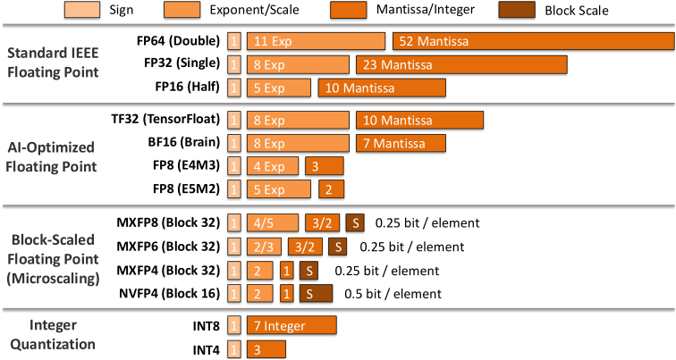
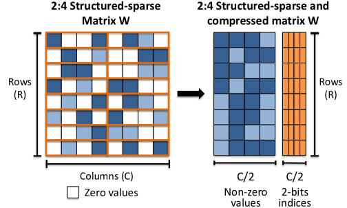

Numerical Representation, Arithmetic, and Precision
1.2.1Numerical Representation, Arithmetic Circuits, and Precision Contracts#
Number formats are the cheapest lever an accelerator has. Halving the width of an operand roughly halves the storage it occupies, the bandwidth it consumes, and the area of the multiplier that consumes it — so reduced precision buys more arithmetic per unit of hardware than almost any other change. The question is what you give up.

Every format splits its bits between a sign, an exponent, and a mantissa. Exponent width sets dynamic range — how large and how small a value can be before it overflows or flushes to zero. Mantissa width sets precision — how finely values can be distinguished within that range. The four families in the figure are four different answers to how those bits should be spent:
- Standard IEEE formats (FP64, FP32) allocate generously on both axes. FP64 spends 11 exponent bits and 52 mantissa bits; FP32 spends 8 and 23.
- AI-oriented formats keep the range and sacrifice the precision. BF16 and TF32 both retain FP32's 8-bit exponent, which is what keeps training numerically stable, while cutting the mantissa to 7 and 10 bits respectively. FP16 does the opposite trade, keeping 10 mantissa bits but dropping to a 5-bit exponent — which is why FP16 training often needs loss scaling and BF16 usually does not.
- Block-scaled formats (MXFP8, MXFP6, MXFP4, NVFP4) share one 8-bit scale factor across a block of values — 32 elements for the MX formats, 16 for NVFP4. The scale costs only a fraction of a bit per element once amortized, so a 4-bit element can carry range that a standalone 4-bit float could not.
- Integer formats (INT8, INT4) drop the exponent entirely and rely on a separate scale applied outside the arithmetic.
Two trends run through this. Dynamic range is protected more carefully than precision, because a value that overflows destroys a training run while a value that is slightly imprecise usually does not. And scaling is increasingly amortized across groups of values rather than stored per element, which is what makes 4-bit arithmetic practical at all.
1.2.1.8Low-Precision Arithmetic, Structured Sparsity, and Effective Data Bandwidth#
Trained networks carry a lot of redundancy. After pruning, many weights can be set to zero with little accuracy loss, and every zero is both a multiplication you can skip and a byte you do not have to fetch. The difficulty is that hardware cannot exploit zeros that arrive in arbitrary positions: irregular access patterns and per-element metadata cost more than the skipped work saves.
Structured sparsity makes the zeros predictable. An M:N rule requires that exactly M of every N consecutive values be nonzero, so the compressed layout has a fixed shape. That regularity preserves locality, allows compact storage with cheap metadata, and — crucially — keeps the datapath regular enough that a matrix engine can still be used [3].

NVIDIA and AMD GPUs implement a fixed 2:4 pattern: two of every four elements must be zero. Operands are stored compactly alongside lightweight metadata, and when the constraint is met throughput can roughly double [4, 5, 6]. AWS Neuron generalizes this to a range of M:N patterns — 4:16, 4:12, 4:8, 2:8, 2:4, 1:4 and 1:2 — which lets a model trade accuracy against throughput at a finer granularity than a single fixed ratio [7].
References
- 1.Open Compute Project. OCP Microscaling Formats (MX) Specification. 2023. Version 1.0.
- 2.Eduardo Alvarez et al. Introducing NVFP4 for Efficient and Accurate Low-Precision Inference. 2025.
- 3.Asit Mishra et al. Accelerating sparse deep neural networks. arXiv preprint arXiv:2104.08378, 2021.
- 4.NVIDIA. NVIDIA A100 Tensor Core GPU Architecture. 2020.
- 5.Jeff Pool, Abhishek Sawarkar and Jay Rodge. Accelerating Inference with Sparsity Using the NVIDIA Ampere Architecture and NVIDIA TensorRT. 2021.
- 6.AMD. Introducing AMD CDNA 3 Architecture: The All-New AMD GPU Architecture for the Modern Era of HPC & AI. 2025.
- 7.AWS. NeuronCore-v4 Architecture. 2026. AWS Neuron SDK 2.31.1 documentation.